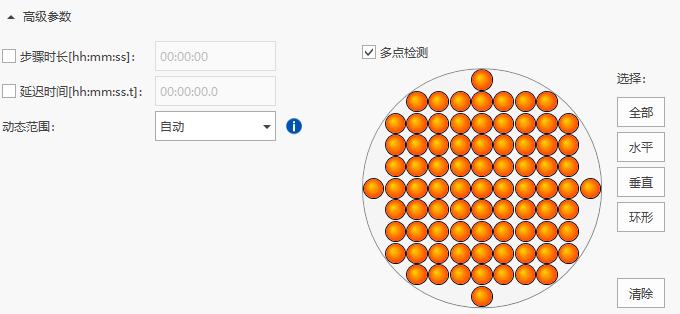

Experiment Information
ID: RP05 · Category: Reporter System
RP05 | ver 1.1 | Revised 2026-10-14
SUSTech-BIO 2026 iGEM Team
Purpose
Measure reporter fluorescence directly from adherent 293T cells in clear Thermo Scientific Nunc 12-well culture plates using a Varioskan LUX reader and SkanIt Software. Replace culture medium with 1 mL PBS per well, then acquire multipoint fluorescence from below the plate at 37°C without shaking.
Single-point readings are generally unsuitable as a representative whole-well measurement for this adherent-cell workflow: uneven cell coverage or reporter distribution can make one location misleading. Use multipoint bottom reading with a consistent sampling pattern. [2]
Materials & Equipment
| Item | Provider / Identifier | Use / Specification |
|---|---|---|
| Adherent 293T samples | Laboratory cell stocks | Reporter-expressing cells at the planned measurement endpoint; retain cells in their original culture wells. |
| Clear 12-well culture plate | Thermo Scientific Nunc; catalog number not recorded | Read the original plate directly. Match the software plate template and no-lid adapter to the actual plate. |
| PBS | Laboratory PBS stock | Gentle rinsing; 1 mL fresh PBS per sample well and PBS-only blank well. |
| Microplate reader and adapter | Varioskan LUX; local display: 3020-460 | Bottom-reading configuration; compatible 6-48-well adapter for a plate without a lid; 37°C temperature control. [1,3] |
| Reader software | Thermo Scientific SkanIt 7.0.2 RE | Plate layout, fluorescence settings, multipoint acquisition and raw-data export. [3] |
| Pipettes, sterile tips and clean tissue | Laboratory supplies | Slow liquid exchange along the well wall; dry the outside of the plate if necessary. |
Before You Start
Map all samples, PBS-only blanks and empty wells. Record sample identity, independent culture-well identity and the measurement endpoint.
Complete the reader setup before exchanging medium for PBS. Keep the time from PBS addition to measurement short and comparable across samples; PBS is the reading liquid in this workflow, not a replacement for prolonged cell culture.
Inspect the adherent layer before washing. 293T cells can lift off during liquid exchange: use slow aspiration and wall-directed addition throughout. Avoid touching the cell layer, directing a liquid jet onto it or shaking the plate.
Procedure
A. Set up the reader and measurement session
-
Switch on the reader and open SkanIt. Select the connected Varioskan LUX. Enable the instrument incubator, set 37°C and wait for the displayed current temperature to reach the target before measuring. [1]
-
Create a measurement session and open Plate Layout. Select the matching 12-well plate template. The archived session uses 'Thermo NUNC, Multidish, 12-well'; verify that it matches the actual plate. Check the installed 6-48-well adapter for a plate without a lid and retain the software's adapter compatibility check. [1,3]
-
Select the sample and blank wells to be measured and record their identities in the plate map. Use the same acquisition settings for samples and both blank types.
-
Add a Fluorescence measurement step for each required reporter channel and enter the excitation and emission wavelengths below. These values are the local acquisition settings shown in the supplied screenshots, not universal spectral maxima for all fluorescent-protein variants. [3]
| Channel | Excitation (nm) | Emission (nm) |
|---|---|---|
| BFP readout, when present | 405 | 460 |
| EGFP | 488 | 510 |
| mCherry | 587 | 611 |
- For every fluorescence step, select Bottom reading, set measurement time to 100 ms, excitation bandwidth to 5 nm and Dynamic range to Auto. Enable Multipoint measurement and choose All to sample the well across the available point pattern. Apply the same pattern to every measured well and channel. Do not add a shaking step. [3]

Figure 1. Multipoint settings in the laboratory SkanIt session. Enable Multipoint measurement and select All; the orange points show the selected sampling pattern. The EGFP step is illustrated. Repeat this setting for every required fluorescence channel. [3]
B. Exchange medium for PBS without disturbing cells
-
Aspirate the culture medium slowly from the side of each well. Keep the tip away from the adherent layer and avoid scraping the bottom. Do not leave the cells uncovered while preparing the next action.
-
Gently rinse the adherent layer with PBS, using enough liquid to cover the well bottom. Add PBS slowly down the well wall and let it spread without forceful mixing. Gently aspirate the rinse from the side. Avoid repeated washing that strips loosely attached 293T cells.
-
Immediately add 1 mL fresh PBS to each sample well, again slowly along the wall. Keep the cell layer covered and the reading volume the same across samples.
-
Prepare the two blank types on the same plate as defined below. Keep their well identities distinct in the exported data.
| Well type | Contents during reading | Role |
|---|---|---|
| Sample | Adherent 293T cells + 1 mL PBS | Cell-associated reporter fluorescence plus background. |
| PBS-only blank | 1 mL of the same PBS; no cells | Matched liquid/plate background for later processing. |
| Empty-well blank | No cells and no added liquid | Diagnostic baseline for the empty plate under the reading setup. |
- Inspect the cell layer after exchange. Record visible lifting, floating sheets or loss of cells; flag affected wells because their fluorescence no longer represents the intended adherent sample. Check for bubbles without shaking or pipetting across the monolayer.
C. Read the original culture plate
-
Remove the plate lid and check that the outside of the clear bottom is clean and dry. Seat the original culture plate correctly in the tray, with its orientation matching the plate map. Do not transfer the cells to another plate.
-
Confirm incubator On, 37°C, bottom reading and multipoint acquisition in every required channel, with no shaking step. Start the measurement and retain the complete acquisition session.
-
Review the well and point results for missing measurements, over-range warnings and strongly uneven spatial signals. Check these against the plate map and the post-wash cell appearance before interpreting a low or inconsistent readout.
D. Save and export before processing
- Save the native .skax session. In Report, select the raw results for all measured channels together with plate layout, protocol settings, instrument information and the run log, then export to Excel. Retain the per-point results as well as any displayed well summary; check that the exported file actually contains the intended point data. [3]
Figure 2. Report export controls in SkanIt 7.0.2 RE. Select the required report contents, then use the Excel export control. Save the native session separately so that the acquisition settings and point results remain recoverable. [3]
-
Keep the exported raw data unchanged and perform background correction and reporter analysis afterward. For sample wells containing PBS, use the PBS-only blank as the matched acellular background; retain empty wells for diagnostic comparison rather than subtracting both blank types in succession. Record the point-to-well summary rule used in later processing.
-
Eject and cover the plate after reading, then handle the samples according to the experiment's endpoint plan and follow the local reader shutdown procedure.
p.s.
Handle 293T cells gently at every liquid-exchange step. Aspirate from the side and add PBS down the wall; forceful addition, scraping or plate shaking can detach cells and create an apparent loss of fluorescence.
Use multipoint acquisition to represent the adherent well. A central single-point reading can miss patches of cells or overrepresent a bright patch. Keep the sampling pattern fixed across conditions, rather than selecting only the brightest positions. [2]
Do not double-subtract PBS-only and empty-well signals. Neither blank removes cellular autofluorescence; retain any experiment-specific cell controls in later analysis.
Measurement points within one well are spatial readings, not independent culture replicates. Preserve point data and independent well identities.
Expected Outcome
Obtain multipoint fluorescence data for the required channels, an identifiable plate map, both blank types and a saved acquisition session. The 293T layer should remain attached.
The exported data support later background correction and well-level reporter comparisons. Signal detectability depends on the sample and controls; fluorescence alone does not establish RNA-editing efficiency.
Troubleshooting
| Observed problem | Check first | Action |
|---|---|---|
| Cells float after PBS exchange | Cell layer and liquid-exchange technique | Flag affected wells. Repeat with intact cells using slow side aspiration and wall-directed addition. Do not shake. |
| Single-point readings are inconsistent | Multipoint setting in each channel; cell distribution | Use multipoint bottom reading with All selected. Reacquire comparable samples; keep single-point and multipoint data separate. [2,3] |
| Multipoint signal is patchy | Bubbles, detached cells, coverage and point pattern | Check cell appearance first. Keep the sampling rule fixed and retain spatial data; do not select only bright points. |
| Weak signal, high background or over-range warning | Channel, bottom optics, both blanks and plate cleanliness | Verify settings and inspect the plate. Retain warnings. If settings change, reacquire samples and blanks together under matched settings. |
| Plate rejected or export incomplete | Template, no-lid adapter, orientation and report contents | Correct the plate setup without bypassing compatibility checks. Re-export channels, points, layout and metadata from the saved session. [1,3] |
Reference
[1] Thermo Fisher Scientific. Varioskan LUX User Manual, N16044, Rev. 1.4 (2023), printed pp. 16 and 19-21: temperature control, plate trays/adapters and plate-template association. Accessed 2026-10-13. Open source
[2] Fallarero A. Practical Tips for Cellular Quantification and Imaging Using Thermo Scientific Varioskan LUX Multimode Reader and Invitrogen EVOS FL Auto Cell Imaging System. Thermo Fisher Scientific, TN_VarioskanLUX_EVOS_0217, p. 2, Tip 3 and Scheme 1: uneven cell distribution and multipoint bottom reading. Accessed 2026-10-13. Open source
[3] Laboratory SkanIt 7.0.2 RE screenshots: app.PNG, bfp.PNG, egfp.PNG, mc.PNG, DDJC.PNG and out.PNG; original archived sessions LAYER 2.skax and EFWRGW.skax. Screenshot copies and a session-settings extract accompany this protocol. Inspected 2026-10-13.